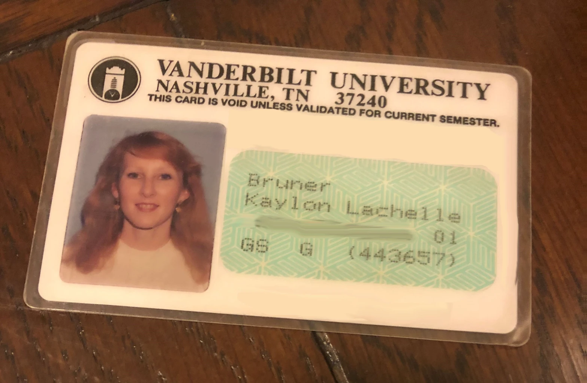
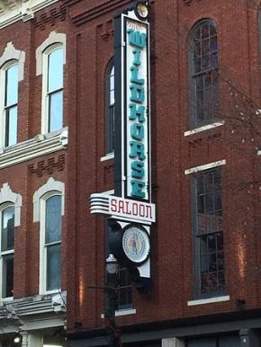
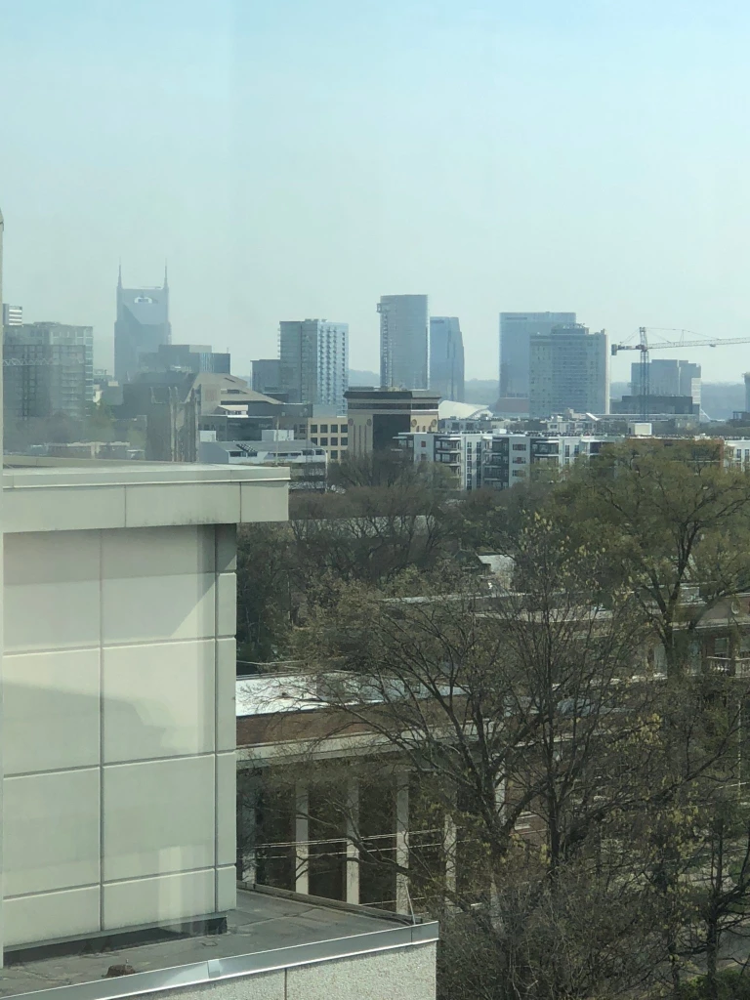
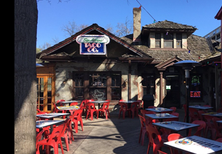
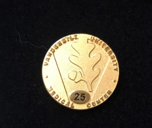

Reflections
 The Vanderbilt University ID I was issued in 1992. I have blurred out my social security number. Identity theft wasn’t a thing back then.
Recently Vanderbilt gave me a gold pin that recognized my having worked there for the last 25 years. Apparently they only started counting after I joined the school as faculty; however, I received my first paycheck from the University in October of 1989. That means I have spent the better part of 33 years at Vanderbilt in Nashville, Tennessee.
A lot has happened in 33 years.
In 1989:
George Bush (the first one) was sworn in as the U.S. President
Margaret Thatcher began serving her last year as the Prime Minister of the United Kingdom.
Daniel Radcliff—whose name for many of us will always be synonymous with Harry Potter—was born.
Cell phones were expensive and rare. They were also huge!
The internet was in its infancy and the World Wide Web was just an idea.
The Berlin Wall fell on November 9, 1989.
In 1989 I was 25 years old living in my hometown of Grenada, Mississippi, trying to figure out what to do with my life. I decided to move to Nashville, but I really didn’t have much of a plan beyond that. I knew I needed a job and easily found one waiting tables at O’Charley’s on 21st Avenue. It had opened in 1971 and was the first one in the country. The restaurant would eventually become a chain and spread across the Southern U.S. The original O’Charley’s on 21st Avenue is long gone, the building torn down sometime in the nineties. The next business didn’t last either, and, as I write this, a shiny new Starbucks sits in that coveted spot across from Vanderbilt.
I worked at O’Charley’s for about six months before landing a job as a research assistant working with Dr. Clark Tibbetts in Vanderbilt’s Department of Microbiology and Immunology. With Dr. Tibbett’s help, in 1992 I matriculated into the graduate program and received my PhD in reproductive pathology from Vanderbilt a few years later.

The Wildhorse Saloon on 2nd
Avenue in downtown Nashville.
On the weekends my grad school friends and I would go to downtown Nashville, which back then was struggling to be relevant. Parking was free, food was cheap, and the music was amazing. In 1994 the now-famous Wildhorse Saloon opened, and we were among the first to try out the dance floor. I learned I couldn’t line dance, but we had a lot of fun trying.
Fast-forward three decades, and Nashville is now a major tourist destination crowded with people from all over the world. Nashville is THE city for bachelorette parties that last all weekend. Drunken bridesmaids in pink cowboy hats lean out of open-air party buses and shout “Woo” in unison as they pass by. Nashvillians call them the “Woo girls.”
Even before the throngs of tourists were common—back when the Nashville airport rolled up the tarmacs long before midnight—Nashville had a fireworks display on July 4th. Hundreds of people would bring chairs and picnics to the banks of the Cumberland River to watch the show. I’ve never had a desire to fight the crowds, and so back in the grad school days some of us would watch the fireworks from the seventh floor of our research building where we all worked at Vanderbilt. At that time there was an open-air mezzanine that had largely been abandoned. The huge room it was attached to held big, whirring machinery and random office items with nowhere to go. We weren’t supposed to be there, but once we discovered the mezzanine, it became a favorite place to eat lunch and get away from the lab for a while. It was also our private spot for viewing the fireworks.
These days the Nashville fireworks display is one of the largest in the country. Last year the event drew more than 250,000 people to the banks of the river. Although the mezzanine and machinery on the seventh floor of my building have been replaced with new and spacious research facilities, you can still see the fireworks from enormous windows that now cover the northeast side of the building.
 A recent photo of downtown Nashville taken from my research building. Although the mezzanine has been replaced, the view is amazing on a clear day. In the distance you can see the AT&T Building, which Nashvillians call the Batman Building. (Photo credit: Sherry Ameli)
Nashville and Vanderbilt have changed a lot since I first arrived in 1989. Over the years most of the businesses along 21st Avenue have been replaced. One that remains is the San Antonio Taco Company, which everyone just calls Satco. The building was a bit dilapidated way back when I was a student, and time has had little effect on it. Then, as now, the wooden deck is huge and inviting, the food is good, and the beer is cold. My friends and I spent quite a few lunch hours and many a Friday night on that deck and it remains a favorite of the current crop of students. Although I rarely get to Satco these days, I like that it’s still there. Change can be good, but there is something comforting in having a few things that remain the same.
Thanksgiving is a day to reflect on our past and be grateful for what we have. As I look at the gold pin that Vanderbilt gave me, it’s hard for me to believe I have been in Nashville more than half of my life. When I moved here 33 years ago, I never imagined that I would stay so long, and I could never have guessed the life that would unfold for me in this city. It’s a good life—and I am thankful.

Satco on 21st Avenue across
from Vanderbilt in Nashville.

The gold pin I received from
Vanderbilt in October of this year
Quick Links
| Pages | Other Pages | |
|---|---|---|
| Home | The Agent Orange Trilogy | |
| The RAM Blogs | Edge of Justice | |
| Books | Help | |
| Media | ||
| About Me | ||